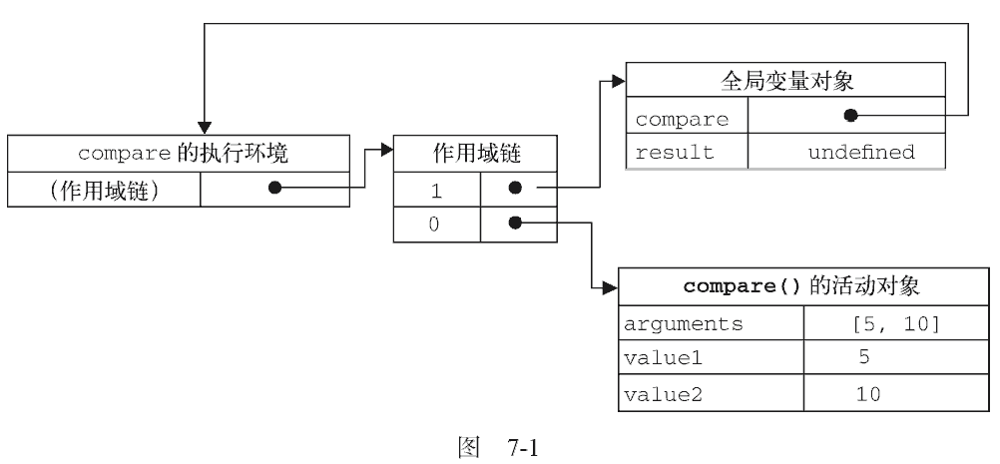
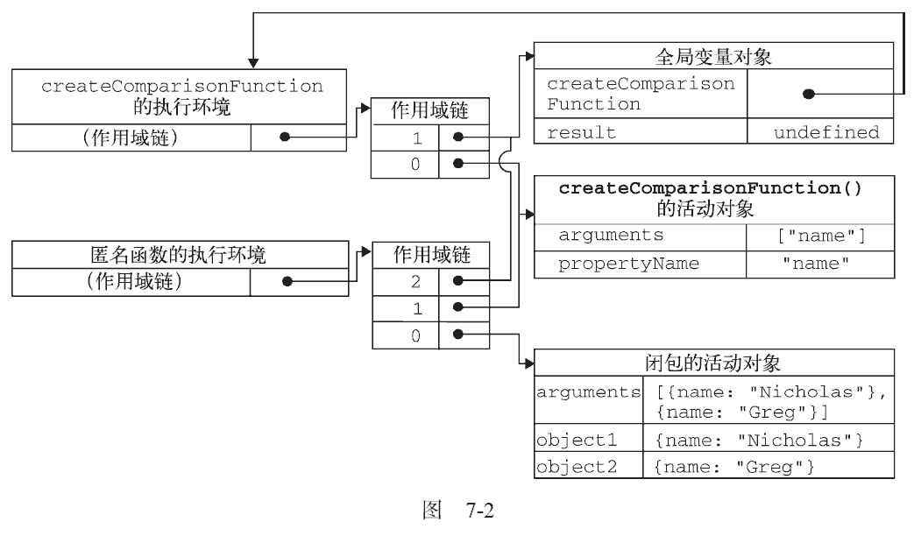

有不少开发人员总是搞不清匿名函数和闭包这两个概念，因此经常混用。闭包是指有权访问另一个函数作用域中的变量的函数。创建闭包的常见方式，就是在一个函数内部创建另一个函数，仍以前面的createComparisonFunction()函数为例，注意加粗的代码。
function createComparisonFunction(propertyName) {
return function(object1, object2) {
var value1 = object1[propertyName];
var value2 = object2[propertyName];
if (value1 < value2) {
return - 1;
} else if (value1 > value2) {
return 1;
} else {
return 0;
}
};
}
在这个例子中，突出的那两行代码是内部函数（一个匿名函数）中的代码，这两行代码访问了外部函数中的变量propertyName。即使这个内部函数被返回了，而且是在其他地方被调用了，但它仍然可以访问变量propertyName。之所以还能够访问这个变量，是因为内部函数的作用域链中包含createComparisonFunction()的作用域。要彻底搞清楚其中的细节，必须从理解函数被调用的时候都会发生什么入手。
第4 章介绍了作用域链的概念。而有关如何创建作用域链以及作用域链有什么作用的细节，对彻底理解闭包至关重要。当某个函数被调用时，会创建一个执行环境（execution context）及相应的作用域链。
然后，使用arguments 和其他命名参数的值来初始化函数的活动对象（activation object）。但在作用域链中，外部函数的活动对象始终处于第二位，外部函数的外部函数的活动对象处于第三位，……直至作为作用域链终点的全局执行环境。
在函数执行过程中，为读取和写入变量的值，就需要在作用域链中查找变量。来看下面的例子。function compare(value1, value2) {
if (value1 < value2) {
return - 1;
} else if (value1 > value2) {
return 1;
} else {
return 0;
}
}
var result = compare(5, 10);
以上代码先定义了compare()函数，然后又在全局作用域中调用了它。当调用compare()时，会创建一个包含arguments、value1 和value2 的活动对象。全局执行环境的变量对象（包含result和compare）在compare()执行环境的作用域链中则处于第二位。图7-1 展示了包含上述关系的compare()函数执行时的作用域链。
后台的每个执行环境都有一个表示变量的对象——变量对象。全局环境的变量对象始终存在，而像compare()函数这样的局部环境的变量对象，则只在函数执行的过程中存在。在创建compare()函数时，会创建一个预先包含全局变量对象的作用域链，这个作用域链被保存在内部的[[Scope]]属性中。
当调用compare()函数时，会为函数创建一个执行环境，然后通过复制函数的[[Scope]]属性中的对象构建起执行环境的作用域链。此后，又有一个活动对象（在此作为变量对象使用）被创建并被推入执行环境作用域链的前端。对于这个例子中compare()函数的执行环境而言，其作用域链中包含两个变量对象：本地活动对象和全局变量对象。显然，作用域链本质上是一个指向变量对象的指针列表，它只引用但不实际包含变量对象。
无论什么时候在函数中访问一个变量时，就会从作用域链中搜索具有相应名字的变量。一般来讲，当函数执行完毕后，局部活动对象就会被销毁，内存中仅保存全局作用域（全局执行环境的变量对象）。但是，闭包的情况又有所不同。
在另一个函数内部定义的函数会将包含函数（即外部函数）的活动对象添加到它的作用域链中。因此，在createComparisonFunction()函数内部定义的匿名函数的作用域链中，实际上将会包含外部函数createComparisonFunction()的活动对象。图7-2 展示了当下列代码执行时，包含函数与内部匿名函数的作用域链。
var compare = createComparisonFunction("name");
var result = compare({ name: "Nicholas" }, { name: "Greg" });
在匿名函数从createComparisonFunction()中被返回后，它的作用域链被初始化为包含createComparisonFunction()函数的活动对象和全局变量对象。这样，匿名函数就可以访问在createComparisonFunction()中定义的所有变量。更为重要的是，createComparisonFunction()函数在执行完毕后，其活动对象也不会被销毁，因为匿名函数的作用域链仍然在引用这个活动对象。换句话说，当createComparisonFunction()函数返回后，其执行环境的作用域链会被销毁，但它的活动对象仍然会留在内存中；直到匿名函数被销毁后，createComparisonFunction()的活动对象才会被销毁，例如：
//创建函数
var compareNames = createComparisonFunction("name");
//调用函数
var result = compareNames({ name: "Nicholas" }, { name: "Greg" });
//解除对匿名函数的引用（以便释放内存）
compareNames = null;
首先，创建的比较函数被保存在变量compareNames 中。而通过将compareNames 设置为等于null解除该函数的引用，就等于通知垃圾回收例程将其清除。随着匿名函数的作用域链被销毁，其他作用域（除了全局作用域）也都可以安全地销毁了。图7-2 展示了调用compareNames()的过程中产生的作用域链之间的关系。

由于闭包会携带包含它的函数的作用域，因此会比其他函数占用更多的内存。过度使用闭包可能会导致内存占用过多，我们建议读者只在绝对必要时再考虑使用闭包。虽然像V8 等优化后的JavaScript 引擎会尝试回收被闭包占用的内存，但请大家还是要慎重使用闭包。
作用域链的这种配置机制引出了一个值得注意的副作用，即闭包只能取得包含函数中任何变量的最后一个值。别忘了闭包所保存的是整个变量对象，而不是某个特殊的变量。下面这个例子可以清晰地说明这个问题。
function createFunctions() {
var result = new Array();
for (var i = 0; i < 10; i++) {
result[i] = function() {
return i;
};
}
return result;
}
运行一下这个函数会返回一个函数数组。表面上看，似乎每个函数都应该返自己的索引值，即位置0 的函数返回0，位置1 的函数返回1，以此类推。但实际上，每个函数都返回10。因为每个函数的作用域链中都保存着createFunctions() 函数的活动对象， 所以它们引用的都是同一个变量i 。当createFunctions()函数返回后，变量i 的值是10，此时每个函数都引用着保存变量i 的同一个变量对象，所以在每个函数内部i 的值都是10。但是，我们可以通过创建另一个匿名函数强制让闭包的行为符合预期，如下所示。
function createFunctions() {
var result = new Array();
for (var i = 0; i < 10; i++) {
result[i] = function(num) {
return function() {
return num;
};
} (i);
}
return result;
}
运行一下在重写了前面的createFunctions()函数后，每个函数就会返回各自不同的索引值了。在这个版本中，我们没有直接把闭包赋值给数组，而是定义了一个匿名函数，并将立即执行该匿名函数的结果赋给数组。这里的匿名函数有一个参数num，也就是最终的函数要返回的值。在调用每个匿名函数时，我们传入了变量i。由于函数参数是按值传递的，所以就会将变量i 的当前值复制给参数num。而在这个匿名函数内部，又创建并返回了一个访问num 的闭包。这样一来，result 数组中的每个函数都有自己num 变量的一个副本，因此就可以返回各自不同的数值了。
在闭包中使用this 对象也可能会导致一些问题。我们知道，this 对象是在运行时基于函数的执行环境绑定的：在全局函数中，this 等于window，而当函数被作为某个对象的方法调用时，this 等于那个对象。不过，匿名函数的执行环境具有全局性，因此其this 对象通常指向window①。但有时候由于编写闭包的方式不同，这一点可能不会那么明显。下面来看一个例子。
var name = "The Window";
var object = {
name: "My Object",
getNameFunc: function() {
return function() {
return this.name;
};
}
};
alert(object.getNameFunc()()); //"The Window"（在非严格模式下）
运行一下以上代码先创建了一个全局变量name，又创建了一个包含name 属性的对象。这个对象还包含一个方法——getNameFunc()，它返回一个匿名函数，而匿名函数又返回this.name。由于getNameFunc()返回一个函数，因此调用object.getNameFunc()()就会立即调用它返回的函数，结果就是返回一个字符串。然而，这个例子返回的字符串是"The Window"，即全局name 变量的值。为什么匿名函数没有取得其包含作用域（或外部作用域）的this 对象呢？
① 当然，在通过call()或apply()改变函数执行环境的情况下，this 就会指向其他对象。
前面曾经提到过，每个函数在被调用时都会自动取得两个特殊变量：this 和arguments。内部函数在搜索这两个变量时，只会搜索到其活动对象为止，因此永远不可能直接访问外部函数中的这两个变量（这一点通过图7-2 可以看得更清楚）。不过，把外部作用域中的this 对象保存在一个闭包能够访问到的变量里，就可以让闭包访问该对象了，如下所示。
var name = "The Window";
var object = {
name: "My Object",
getNameFunc: function() {
var that = this;
return function() {
return that.name;
};
}
};
alert(object.getNameFunc()()); //"My Object"
运行一下代码中突出的行展示了这个例子与前一个例子之间的不同之处。在定义匿名函数之前，我们把this对象赋值给了一个名叫that 的变量。而在定义了闭包之后，闭包也可以访问这个变量，因为它是我们在包含函数中特意声名的一个变量。即使在函数返回之后，that 也仍然引用着object，所以调用object.getNameFunc()()就返回了"My Object"。
this 和arguments 也存在同样的问题。如果想访问作用域中的arguments 对象，必须将对该对象的引用保存到另一个闭包能够访问的变量中。
在几种特殊情况下，this 的值可能会意外地改变。比如，下面的代码是修改前面例子的结果。
var name = "The Window";
var object = {
name: "My Object",
getName: function() {
return this.name;
}
};
//这里的getName()方法只简单地返回this.name的值。以下是几种调用object.getName()的方式以及各自的结果。
object.getName();
(object.getName)(); //"My Object"
(object.getName = object.getName)(); //"The Window"，在非严格模式下
运行一下第一行代码跟平常一样调用了object.getName()，返回的是"My Object"，因为this.name就是object.name。第二行代码在调用这个方法前先给它加上了括号。虽然加上括号之后，就好像只是在引用一个函数，但this 的值得到了维持，因为object.getName 和(object.getName)的定义是相同的。第三行代码先执行了一条赋值语句，然后再调用赋值后的结果。因为这个赋值表达式的值是函数本身，所以this 的值不能得到维持，结果就返回了"The Window"。
当然，你不大可能会像第二行和第三行代码一样调用这个方法。不过，这个例子有助于说明即使是语法的细微变化，都有可能意外改变this 的值。
由于IE9 之前的版本对JScript 对象和COM 对象使用不同的垃圾收集例程（第4 章曾经讨论过），因此闭包在IE 的这些版本中会导致一些特殊的问题。具体来说，如果闭包的作用域链中保存着一个HTML 元素，那么就意味着该元素将无法被销毁。来看下面的例子。
function assignHandler() {
var element = document.getElementById("someElement");
element.onclick = function() {
alert(element.id);
};
}
以上代码创建了一个作为element 元素事件处理程序的闭包，而这个闭包则又创建了一个循环引用（事件将在第13 章讨论）。由于匿名函数保存了一个对assignHandler()的活动对象的引用，因此就会导致无法减少element 的引用数。只要匿名函数存在，element 的引用数至少也是1，因此它所占用的内存就永远不会被回收。不过，这个问题可以通过稍微改写一下代码来解决，如下所示。
function assignHandler() {
var element = document.getElementById("someElement");
var id = element.id;
element.onclick = function() {
alert(id);
};
element = null;
}
在上面的代码中，通过把element.id 的一个副本保存在一个变量中，并且在闭包中引用该变量消除了循环引用。但仅仅做到这一步，还是不能解决内存泄漏的问题。必须要记住：闭包会引用包含函数的整个活动对象，而其中包含着element。即使闭包不直接引用element，包含函数的活动对象中也仍然会保存一个引用。因此，有必要把element 变量设置为null。这样就能够解除对DOM 对象的引用，顺利地减少其引用数，确保正常回收其占用的内存。